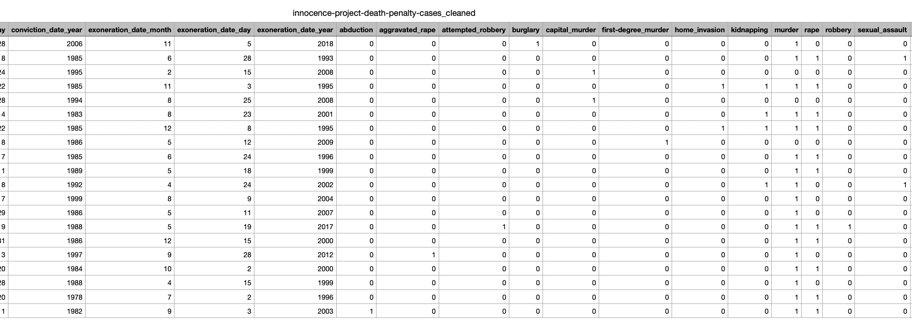
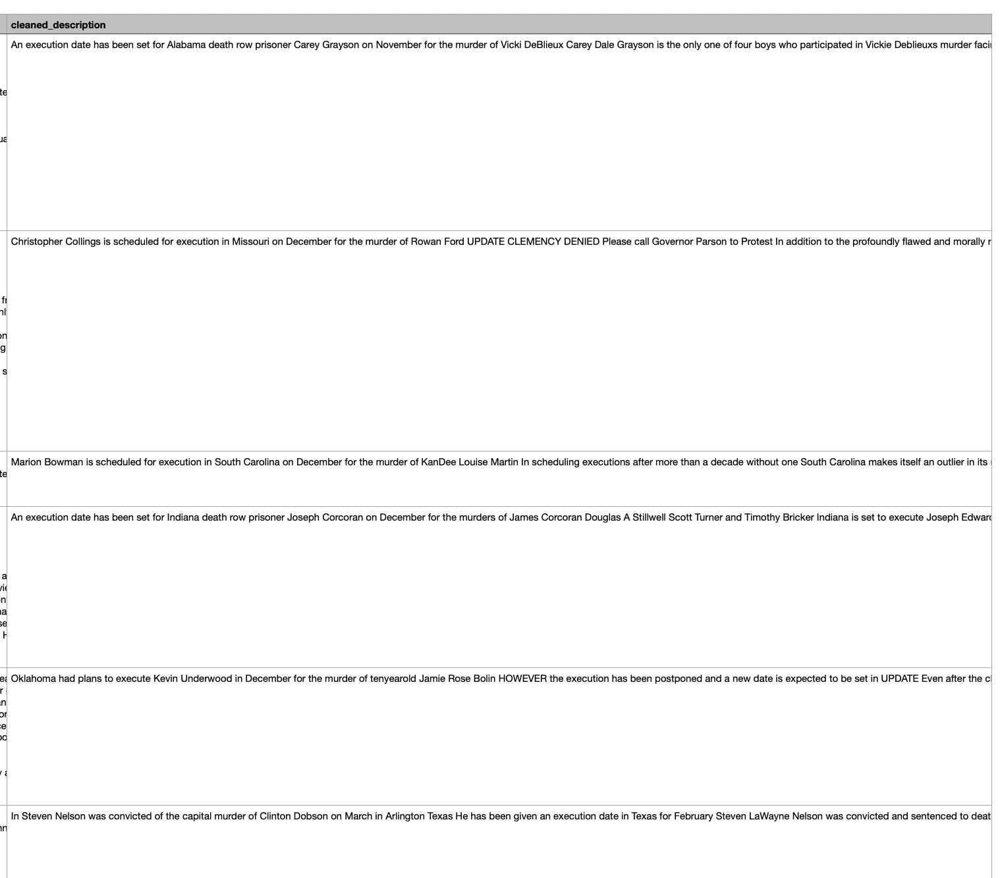

import pandas as pdData Cleaning
Introduction
The death penalty has been a deeply debated topic in the United States, sparking conversations about justice, fairness, and its impact on society. This project takes a closer look at the death penalty by analyzing detailed data from multiple sources, including information about exonerees, scheduled executions, public opinions, and state policies. By organizing and exploring this data, the goal is to uncover patterns, highlight disparities, and better understand how the death penalty is applied. The project offers a fresh perspective on an issue that continues to shape the nation’s justice system and public discourse.
Methods
Key Data Processing Steps
Standardization
- Converted column names to lowercase with underscores
- Standardized date formats by splitting into month/day/year
- Created binary indicators (0/1) for yes/no fields
- Removed unnecessary information
Data Transformation
- Split multi-value fields (charges, convictions, contributing causes) into binary columns
- Cleaned and formatted text data from petitions
Code
Innocence Project - Death Penalty Exonerations
death_penalty_df = pd.read_csv("../../data/raw-data/innocence-project-death-penalty-cases.csv")
death_penalty_df.head()| Name | URL | Time Served | State | Charge | Conviction | Sentence | Incident Date | Conviction Date | Exoneration Date | Accused Pleaded Guilty | Contributing Causes of Conviction | Death Penalty Case | Race of Exoneree | Race of Victim | Status | |
|---|---|---|---|---|---|---|---|---|---|---|---|---|---|---|---|---|
| 0 | Clemente Aguirre-Jarquin | https://innocenceproject.org/cases/clemente-ag... | NaN | Florida | Murder, Burglary | First-degree Murder, Burglary | Death | 06/17/2004 | 02/28/2006 | 11/05/2018 | No | Unvalidated or Improper Forensic Science | Yes | Latinx | Caucasian | Exonerated by DNA |
| 1 | Kirk Bloodsworth | https://innocenceproject.org/cases/kirk-bloods... | 8 years | Maryland | Murder, Sexual Assault, Rape | First-degree Murder, Sexual Assault, Rape | Death | 06/25/1984 | 03/08/1985 | 06/28/1993 | No | Eyewitness Misidentification, Government Misco... | Yes | Caucasian | Caucasian | Exonerated by DNA |
| 2 | Kennedy Brewer | https://innocenceproject.org/cases/kennedy-bre... | 15 years | Mississippi | Capital Murder, Sexual Battery | Capital Murder, Sexual Battery | Death | 05/03/1992 | 03/24/1995 | 02/15/2008 | No | Government Misconduct, Unvalidated or Improper... | Yes | African American | African American | Exonerated by DNA |
| 3 | Rolando Cruz | https://innocenceproject.org/cases/rolando-cruz/ | 10 years | Illinois | Rape, Murder, Kidnapping, Home Invasion | Murder, Rape, Aggravated Kidnapping (2 cts.), ... | Death | 02/25/1983 | 02/22/1985 | 11/03/1995 | No | False Confessions or Admissions, Government Mi... | Yes | Latinx | Caucasian | Exonerated by DNA |
| 4 | Michael Blair | https://innocenceproject.org/cases/michael-blair/ | 14 years | Texas | Capital Murder | Capital Murder | Death | 09/04/1993 | 09/28/1994 | 08/25/2008 | No | Eyewitness Misidentification, Unvalidated or I... | Yes | Asian American | Caucasian | Exonerated by DNA |
I am going to drop the URL column because it is unnecessary information.
if 'URL' in death_penalty_df.columns:
death_penalty_df.drop(columns=['URL'], inplace=True)I will rename all the columns to lowercase and replace spaces with underscores. This ensures all columns will be in the same format, ensures easy readability, and speeds up the process going forward.
death_penalty_df.columns = death_penalty_df.columns.str.lower().str.replace(' ', '_')I changed accused_pleaded_guilty and death_penalty case into binary columns, they were formatted as yes/no.
binary_columns = ['accused_pleaded_guilty', 'death_penalty_case']
for column in binary_columns:
death_penalty_df[column] = death_penalty_df[column].apply(lambda x: 1 if str(x).lower() in ['yes', 'y', 'true', '1'] else 0)I removed, “years” from the time_served column.
death_penalty_df['time_served'] = death_penalty_df['time_served'].astype(str)
death_penalty_df['time_served'] = death_penalty_df['time_served'].str.extract(r'(\d+)').astype(float)I separated incident date, conviction date, and exoneration date into month, day, and year.
for date_column in ['incident_date', 'conviction_date', 'exoneration_date']:
if date_column in death_penalty_df.columns:
death_penalty_df[[f"{date_column}_month", f"{date_column}_day", f"{date_column}_year"]] = (
death_penalty_df[date_column].str.split('/', expand=True)
)
death_penalty_df.drop(columns=[date_column], inplace=True)# Split the 'Charge' column into individual charges
charge_dummies = death_penalty_df['charge'].str.get_dummies(sep=', ')
col_counts = {}
new_col_names = []
for col in charge_dummies.columns:
if col in col_counts:
col_counts[col] += 1
new_name = f"{col}_{col_counts[col]}"
else:
col_counts[col] = 1
new_name = col
new_col_names.append(new_name)
charge_dummies.columns = new_col_names
death_penalty_df = pd.concat([death_penalty_df, charge_dummies], axis=1)
death_penalty_df = death_penalty_df.drop(columns=['etc.'], errors='ignore')# Split the 'Conviction' column into individual charges
conviction_dummies = death_penalty_df['conviction'].str.get_dummies(sep=', ')
col_counts = {}
new_col_names = []
for col in conviction_dummies.columns:
if col in col_counts:
col_counts[col] += 1
new_name = f"{col}_{col_counts[col]}"
else:
col_counts[col] = 1
new_name = col
new_col_names.append(new_name)
conviction_dummies.columns = new_col_names
death_penalty_df = pd.concat([death_penalty_df, conviction_dummies], axis=1)
death_penalty_df = death_penalty_df.drop(columns=['etc.'], errors='ignore')# Split the 'Contributing Causes of Conviction' column into individual causes
causes_dummies = death_penalty_df['contributing_causes_of_conviction'].str.get_dummies(sep=', ')
col_counts = {}
new_col_names = []
for col in causes_dummies.columns:
if col in col_counts:
col_counts[col] += 1
new_name = f"{col}_{col_counts[col]}"
else:
col_counts[col] = 1
new_name = col
new_col_names.append(new_name)
causes_dummies.columns = new_col_names
death_penalty_df = pd.concat([death_penalty_df, causes_dummies], axis=1)
death_penalty_df = death_penalty_df.drop(columns=['etc.'], errors='ignore')
print("\nNew columns created for Contributing Causes:")
print(causes_dummies.columns.tolist())
print("\nValue counts for each cause:")
for col in causes_dummies.columns:
count = causes_dummies[col].sum()
if count > 0:
print(f"{col}: {count} cases")
New columns created for Contributing Causes:
['Eyewitness Misidentification', 'False Confessions or Admissions', 'Government Misconduct', 'Inadequate Defense', 'Informants', 'Unvalidated or Improper Forensic Science']
Value counts for each cause:
Eyewitness Misidentification: 9 cases
False Confessions or Admissions: 11 cases
Government Misconduct: 9 cases
Inadequate Defense: 3 cases
Informants: 5 cases
Unvalidated or Improper Forensic Science: 15 casesI am renaming the new columns to match format.
death_penalty_df.columns = death_penalty_df.columns.str.lower().str.replace(' ', '_')It is important to check the dataframe head before converting back to a CSV, to make sure it is in good shape.
death_penalty_df.head()| name | time_served | state | charge | conviction | sentence | accused_pleaded_guilty | contributing_causes_of_conviction | death_penalty_case | race_of_exoneree | ... | government_misconduct | inadequate_defense | informants | unvalidated_or_improper_forensic_science | eyewitness_misidentification | false_confessions_or_admissions | government_misconduct | inadequate_defense | informants | unvalidated_or_improper_forensic_science | |
|---|---|---|---|---|---|---|---|---|---|---|---|---|---|---|---|---|---|---|---|---|---|
| 0 | Clemente Aguirre-Jarquin | NaN | Florida | Murder, Burglary | First-degree Murder, Burglary | Death | 0 | Unvalidated or Improper Forensic Science | 1 | Latinx | ... | 0 | 0 | 0 | 1 | 0 | 0 | 0 | 0 | 0 | 1 |
| 1 | Kirk Bloodsworth | 8.0 | Maryland | Murder, Sexual Assault, Rape | First-degree Murder, Sexual Assault, Rape | Death | 0 | Eyewitness Misidentification, Government Misco... | 1 | Caucasian | ... | 1 | 0 | 0 | 0 | 1 | 0 | 1 | 0 | 0 | 0 |
| 2 | Kennedy Brewer | 15.0 | Mississippi | Capital Murder, Sexual Battery | Capital Murder, Sexual Battery | Death | 0 | Government Misconduct, Unvalidated or Improper... | 1 | African American | ... | 1 | 0 | 0 | 1 | 0 | 0 | 1 | 0 | 0 | 1 |
| 3 | Rolando Cruz | 10.0 | Illinois | Rape, Murder, Kidnapping, Home Invasion | Murder, Rape, Aggravated Kidnapping (2 cts.), ... | Death | 0 | False Confessions or Admissions, Government Mi... | 1 | Latinx | ... | 1 | 0 | 1 | 1 | 0 | 1 | 1 | 0 | 1 | 1 |
| 4 | Michael Blair | 14.0 | Texas | Capital Murder | Capital Murder | Death | 0 | Eyewitness Misidentification, Unvalidated or I... | 1 | Asian American | ... | 0 | 0 | 0 | 1 | 1 | 0 | 0 | 0 | 0 | 1 |
5 rows × 66 columns
output_path = "../../data/processed-data/innocence-project-death-penalty-cases_cleaned.csv"
death_penalty_df.to_csv(output_path, index=False)
print(f"File saved successfully to {output_path}")File saved successfully to ../../data/processed-data/innocence-project-death-penalty-cases_cleaned.csv
Innocence Project - All Exonerations
all_cases_df = pd.read_csv("../../data/raw-data/innocence-project-all-cases.csv")
all_cases_df.head()| Name | URL | Time Served | State | Charge | Conviction | Sentence | Incident Date | Conviction Date | Exoneration Date | Accused Pleaded Guilty | Contributing Causes of Conviction | Death Penalty Case | Race of Exoneree | Race of Victim | Status | |
|---|---|---|---|---|---|---|---|---|---|---|---|---|---|---|---|---|
| 0 | A.B. Butler | https://innocenceproject.org/cases/a-b-butler/ | 17 years | Texas | Rape, Kidnapping | Aggravated Kidnapping (rape was aggravating fa... | 99 years | 05/20/1983 | 12/16/1993 | 05/31/2000 | No | Eyewitness Misidentification | No | African American | Caucasian | Exonerated by DNA |
| 1 | Alan Newton | https://innocenceproject.org/cases/alan-newton/ | 21 years | New York | Rape, Robbery, Assault | Rape, Robbery, Assault | 13 1/3 to 40 years | 06/23/1984 | 05/21/1985 | 07/06/2006 | No | Eyewitness Misidentification | No | African American | African American | Exonerated by DNA |
| 2 | Albert Johnson | https://innocenceproject.org/cases/albert-john... | 10 years | California | Sexual Assault | Sexual Assault (2 cts.) | 39 years | 02/25/1992 | 01/28/1992 | 10/03/2002 | No | Eyewitness Misidentification, Government Misco... | No | African American | Latinx | Exonerated by DNA |
| 3 | Alejandro Hernandez | https://innocenceproject.org/cases/alejandro-h... | 10 years | Illinois | Murder, Rape, Kidnapping, Home Invasion, etc. | Murder, Rape, Aggravated Kidnapping, Deviant S... | Death | 02/23/1983 | 02/22/1985 | 12/08/1995 | No | False Confessions or Admissions, Government Mi... | Yes | Latinx | Caucasian | Exonerated by DNA |
| 4 | Andre Hatchett | https://innocenceproject.org/cases/andre-hatch... | 25 years | New York | Second-degree Murder | Second-degree Murder | 25 years to life | 02/18/1991 | NaN | 03/10/2016 | NaN | Eyewitness Misidentification, Government Misco... | No | African American | African American | Exonerated by Other Means |
if 'URL' in all_cases_df.columns:
all_cases_df.drop(columns=['URL'], inplace=True)all_cases_df.columns = all_cases_df.columns.str.lower().str.replace(' ', '_')binary_columns = ['accused_pleaded_guilty', 'death_penalty_case']
for column in binary_columns:
all_cases_df[column] = all_cases_df[column].apply(lambda x: 1 if str(x).lower() in ['yes', 'y', 'true', '1'] else 0)all_cases_df['time_served'] = all_cases_df['time_served'].astype(str)
all_cases_df['time_served'] = all_cases_df['time_served'].str.extract(r'(\d+)').astype(float)for date_column in ['incident_date', 'conviction_date', 'exoneration_date']:
if date_column in all_cases_df.columns:
all_cases_df[[f"{date_column}_month", f"{date_column}_day", f"{date_column}_year"]] = (
all_cases_df[date_column].str.split('/', expand=True)
)
all_cases_df.drop(columns=[date_column], inplace=True)# Split the 'Charge' column into individual charges
charge_dummies = all_cases_df['charge'].str.get_dummies(sep=', ')
col_counts = {}
new_col_names = []
for col in charge_dummies.columns:
if col in col_counts:
col_counts[col] += 1
new_name = f"{col}_{col_counts[col]}"
else:
col_counts[col] = 1
new_name = col
new_col_names.append(new_name)
charge_dummies.columns = new_col_names
all_cases_df = pd.concat([all_cases_df, charge_dummies], axis=1)
death_penalty_df = all_cases_df.drop(columns=['etc.'], errors='ignore')# Split the 'Conviction' column into individual charges
conviction_dummies = all_cases_df['conviction'].str.get_dummies(sep=', ')
col_counts = {}
new_col_names = []
for col in conviction_dummies.columns:
if col in col_counts:
col_counts[col] += 1
new_name = f"{col}_{col_counts[col]}"
else:
col_counts[col] = 1
new_name = col
new_col_names.append(new_name)
conviction_dummies.columns = new_col_names
all_cases_df = pd.concat([all_cases_df, conviction_dummies], axis=1)
all_cases_df = death_penalty_df.drop(columns=['etc.'], errors='ignore')# Split the 'Contributing Causes of Conviction' column into individual causes
causes_dummies = all_cases_df['contributing_causes_of_conviction'].str.get_dummies(sep=', ')
col_counts = {}
new_col_names = []
for col in causes_dummies.columns:
if col in col_counts:
col_counts[col] += 1
new_name = f"{col}_{col_counts[col]}"
else:
col_counts[col] = 1
new_name = col
new_col_names.append(new_name)
causes_dummies.columns = new_col_names
all_cases_df = pd.concat([all_cases_df, causes_dummies], axis=1)
all_cases_df = all_cases_df.drop(columns=['etc.'], errors='ignore')
print("\nNew columns created for Contributing Causes:")
print(causes_dummies.columns.tolist())
print("\nValue counts for each cause:")
for col in causes_dummies.columns:
count = causes_dummies[col].sum()
if count > 0:
print(f"{col}: {count} cases")
New columns created for Contributing Causes:
['Eyewitness Misidentification', 'False Confessions or Admissions', 'Government Misconduct', 'Inadequate Defense', 'Informants', 'Unvalidated or Improper Forensic Science']
Value counts for each cause:
Eyewitness Misidentification: 136 cases
False Confessions or Admissions: 59 cases
Government Misconduct: 40 cases
Inadequate Defense: 18 cases
Informants: 27 cases
Unvalidated or Improper Forensic Science: 110 casesall_cases_df.head()| name | time_served | state | charge | conviction | sentence | accused_pleaded_guilty | contributing_causes_of_conviction | death_penalty_case | race_of_exoneree | ... | Use of a Firearm | Vehicle Theft | Wrongful Imprisonment | in concert) | Eyewitness Misidentification | False Confessions or Admissions | Government Misconduct | Inadequate Defense | Informants | Unvalidated or Improper Forensic Science | |
|---|---|---|---|---|---|---|---|---|---|---|---|---|---|---|---|---|---|---|---|---|---|
| 0 | A.B. Butler | 17.0 | Texas | Rape, Kidnapping | Aggravated Kidnapping (rape was aggravating fa... | 99 years | 0 | Eyewitness Misidentification | 0 | African American | ... | 0 | 0 | 0 | 0 | 1 | 0 | 0 | 0 | 0 | 0 |
| 1 | Alan Newton | 21.0 | New York | Rape, Robbery, Assault | Rape, Robbery, Assault | 13 1/3 to 40 years | 0 | Eyewitness Misidentification | 0 | African American | ... | 0 | 0 | 0 | 0 | 1 | 0 | 0 | 0 | 0 | 0 |
| 2 | Albert Johnson | 10.0 | California | Sexual Assault | Sexual Assault (2 cts.) | 39 years | 0 | Eyewitness Misidentification, Government Misco... | 0 | African American | ... | 0 | 0 | 0 | 0 | 1 | 0 | 1 | 0 | 0 | 0 |
| 3 | Alejandro Hernandez | 10.0 | Illinois | Murder, Rape, Kidnapping, Home Invasion, etc. | Murder, Rape, Aggravated Kidnapping, Deviant S... | Death | 0 | False Confessions or Admissions, Government Mi... | 1 | Latinx | ... | 0 | 0 | 0 | 0 | 0 | 1 | 1 | 0 | 0 | 1 |
| 4 | Andre Hatchett | 25.0 | New York | Second-degree Murder | Second-degree Murder | 25 years to life | 0 | Eyewitness Misidentification, Government Misco... | 0 | African American | ... | 0 | 0 | 0 | 0 | 1 | 0 | 1 | 1 | 0 | 0 |
5 rows × 146 columns
output_path = "../../data/processed-data/innocence-project-all-cases_cleaned.csv"
all_cases_df.to_csv(output_path, index=False)
print(f"File saved successfully to {output_path}")File saved successfully to ../../data/processed-data/innocence-project-all-cases_cleaned.csvUpcoming Executions
executions_df_2024 = pd.read_csv("../../data/raw-data/2024_remaining_executions.csv")
executions_df_2025 = pd.read_csv("../../data/raw-data/2025_scheduled_executions.csv")
executions_df_2026 = pd.read_csv("../../data/raw-data/2026_scheduled_executions.csv")
executions_df_2026 = pd.read_csv("../../data/raw-data/2027_scheduled_executions.csv")
executions_df_2027 = pd.read_csv("../../data/raw-data/2027_scheduled_executions.csv")Added a year column to each CSV file.
executions_df_2024['Year'] = 2024
executions_df_2025['Year'] = 2025
executions_df_2026['Year'] = 2026
executions_df_2027['Year'] = 2027Merged datasets together.
all_executions = pd.concat([executions_df_2024, executions_df_2025, executions_df_2026, executions_df_2027], ignore_index=True)
all_executions.head()| Date | State | Prisoner | Year | |
|---|---|---|---|---|
| 0 | November 21 | AL | Carey Dale Grayson | 2024 |
| 1 | December 3 | MO | Christopher Leroy Collings | 2024 |
| 2 | December 18 | IN | Joseph Corcoran | 2024 |
| 3 | December 19 | OK | Kevin Ray Underwood | 2024 |
| 4 | February 5 | TX | Steven Nelson | 2025 |
Save clean dataset to processed data.
all_executions.to_csv("../../data/processed-data/all_scheduled_executions.csv", index=False)Death Penalty Beliefs
death_penalty_beliefs_df = pd.read_csv("../../data/raw-data/GSS2002.csv")
death_penalty_beliefs_df.head()| ID | Region | Gender | Race | Education | Marital | Religion | Happy | Income | PolParty | ... | Marijuana | DeathPenalty | OwnGun | GunLaw | SpendMilitary | SpendEduc | SpendEnv | SpendSci | Pres00 | Postlife | |
|---|---|---|---|---|---|---|---|---|---|---|---|---|---|---|---|---|---|---|---|---|---|
| 0 | 1 | South Central | Female | White | HS | Divorced | Inter-nondenominational | Pretty happy | 30000-34999 | Strong Rep | ... | NaN | Favor | No | Favor | Too little | Too little | About right | About right | Bush | Yes |
| 1 | 2 | South Central | Male | White | Bachelors | Married | Protestant | Pretty happy | 75000-89999 | Not Str Rep | ... | Not legal | Favor | Yes | Oppose | About right | Too little | About right | About right | Bush | Yes |
| 2 | 3 | South Central | Female | White | HS | Separated | Protestant | NaN | 35000-39999 | Strong Rep | ... | NaN | NaN | NaN | NaN | NaN | NaN | NaN | NaN | Bush | NaN |
| 3 | 4 | South Central | Female | White | Left HS | Divorced | Protestant | NaN | 50000-59999 | Ind, Near Dem | ... | NaN | NaN | NaN | NaN | About right | Too little | Too little | Too little | NaN | NaN |
| 4 | 5 | South Central | Male | White | Left HS | Divorced | Protestant | NaN | 40000-49999 | Ind | ... | NaN | NaN | NaN | NaN | NaN | NaN | NaN | NaN | NaN | NaN |
5 rows × 21 columns
I kept only the relevant columns: region, gender, race, education, religion, political party, income, and belief in the death penalty. I removed less relevant columns, such as happiness and marital status.
death_penalty_beliefs_df = pd.read_csv("../../data/raw-data/GSS2002.csv")
relevant_columns = [
'Region', 'Gender', 'Race', 'Education', 'Religion',
'PolParty', 'Income', 'DeathPenalty'
]
death_penalty_beliefs_df = death_penalty_beliefs_df[relevant_columns]I dropped any row where belief in the death penalty was NA.
death_penalty_beliefs_df = death_penalty_beliefs_df.dropna(subset=['DeathPenalty'])death_penalty_beliefs_df.columns = death_penalty_beliefs_df.columns.str.lower().str.replace(' ', '_')Take the average income for the income column.
def clean_income(value):
if pd.isna(value):
return None
value = str(value).strip()
if '-' in value:
try:
low, high = map(int, value.split('-'))
return (low + high) / 2
except:
return None
return value
death_penalty_beliefs_df['income'] = death_penalty_beliefs_df['income'].apply(clean_income)death_penalty_beliefs_df.head()| region | gender | race | education | religion | polparty | income | deathpenalty | |
|---|---|---|---|---|---|---|---|---|
| 0 | South Central | Female | White | HS | Inter-nondenominational | Strong Rep | 32499.5 | Favor |
| 1 | South Central | Male | White | Bachelors | Protestant | Not Str Rep | 82499.5 | Favor |
| 5 | South Central | Male | White | HS | Catholic | Ind, Near Rep | 44999.5 | Favor |
| 8 | South Central | Male | White | HS | Catholic | Strong Rep | 67499.5 | Favor |
| 13 | South Central | Female | White | HS | Protestant | Strong Rep | 67499.5 | Favor |
death_penalty_beliefs_df.to_csv("../../data/processed-data/death_penalty_beliefs_cleaned.csv", index=False)Death Penalty Petitions
petitions_df = pd.read_csv("../../data/raw-data/petitions_descriptions.csv")import re
def clean_text(text):
text = str(text)
text = re.sub(r'http\S+|www\S+|https\S+', '', text, flags=re.MULTILINE)
text = re.sub(r'\S+@\S+', '', text)
redundant_phrases = [
"Please sign the petition",
"Click here",
"Read more",
"Petitions will be delivered",
"Please continue to sign this petition",
"Please reach out now to the Board",
"You can simply leave a voice message"
]
for phrase in redundant_phrases:
text = text.replace(phrase, "")
text = re.sub(r'<.*?>', '', text)
text = re.sub(r'[^a-zA-Z\s]', '', text)
text = re.sub(r'\s+', ' ', text).strip()
return text
petitions_df['cleaned_description'] = petitions_df['description'].apply(clean_text)
output_path = "../../data/processed-data/cleaned_petitions_descriptions.csv"
petitions_df.to_csv(output_path, index=False)
print(f"Cleaned data saved to {output_path}")Cleaned data saved to ../../data/processed-data/cleaned_petitions_descriptions.csv
States with/without Death Penalty
has_death_df = pd.read_csv("../../data/raw-data/has_death_penalty.csv")
has_death_df.head()| State | has_death_penalty | abolished | |
|---|---|---|---|
| 0 | Alabama | 1 | NaN |
| 1 | Alaska | 0 | 1957.0 |
| 2 | Arizona | 1 | NaN |
| 3 | Arkansas | 1 | NaN |
| 4 | California | 1 | NaN |
has_death_df.columns = has_death_df.columns.str.lower().str.replace(' ', '_')has_death_df.to_csv("../../data/processed-data/has_death_penalty_cleaned.csv", index=False)Sentence Outcomes
outcomes_df = pd.read_csv("../../data/raw-data/sentence_outcomes_nationally.csv")
outcomes_df.head()| all reversals | 4,732 | |
|---|---|---|
| 0 | on death row | 2,272 |
| 1 | executed | 1,542 |
| 2 | died, not executed | 734 |
| 3 | commutation | 291 |
| 4 | exoneration | 183 |
outcomes_df.to_csv("../../data/processed-data/sentence_outcomes_nationally.csv", index=False)Sentences
sentences_df = pd.read_csv("../../data/raw-data/sentences.csv")
sentences_df.head()| defendant | sentence | Name | Name (sortable) | Aliases | Gender | Races | Jurisdiction | State Abbreviation | Sub Jurisdiction | County and State | Region | Year | Multi-sentence identifier | Outcome of Sentence | Current Case Status | |
|---|---|---|---|---|---|---|---|---|---|---|---|---|---|---|---|---|
| 0 | 5303 | 5502 | Reno [No Last Name] | [no last name] reno | Harold R. Memro (Tried as) | Male | White | California | CA | Los Angeles County | Los Angeles County, California | West | 1987.0 | 1.2 | Active Death Sentence | Active Death Sentence |
| 1 | 5303 | 5501 | Reno [No Last Name] | [no last name] reno | Harold R. Memro (Tried as) | Male | White | California | CA | Los Angeles County | Los Angeles County, California | West | 1979.0 | 1.1 | Resentenced to Death | Active Death Sentence |
| 2 | 5304 | 5503 | Joe Henry Abbott | abbott joe | NaN | Male | Black | California | CA | San Bernardino County | San Bernardino County, California | West | 2006.0 | NaN | Died on Death Row | Died on Death Row |
| 3 | 5305 | 5504 | Dane Abdool | abdool dane | NaN | Male | White | Florida | FL | Orange County | Orange County, Florida | South | 2008.0 | NaN | Grant of Relief (Retrial/Resentencing Pending) | Grant of Relief (Retrial/Resentencing Pending) |
| 4 | 6433 | 7392 | Jalil Abdul-Kabir | abdul-kabir jalil | Ted Calvin Cole (Tried as) | Male | White | Texas | TX | Tom Green County | Tom Green County, Texas | South | 1988.0 | NaN | Resentenced to Life or Less | Resentenced to Life or Less |
columns_to_drop = ['Name', 'Name (sortable)', 'County and State', 'sentence', 'defendant', 'Aliases', 'Multi-sentence identifier']
sentences_df = sentences_df.drop(columns=columns_to_drop)sentences_df.columns = sentences_df.columns.str.lower().str.replace(' ', '_')# Create binary columns for each race in the 'races' column
races = ['White', 'Black', 'Latino/a']
for race in races:
sentences_df[race] = sentences_df['races'].apply(
lambda x: 1 if isinstance(x, str) and race in x else 0
)
sentences_df[['races', 'White', 'Black', 'Latino/a']].head()| races | White | Black | Latino/a | |
|---|---|---|---|---|
| 0 | White | 1 | 0 | 0 |
| 1 | White | 1 | 0 | 0 |
| 2 | Black | 0 | 1 | 0 |
| 3 | White | 1 | 0 | 0 |
| 4 | White | 1 | 0 | 0 |
sentences_df.head()| gender | races | jurisdiction | state_abbreviation | sub_jurisdiction | region | year | outcome_of_sentence | current_case_status | White | Black | Latino/a | |
|---|---|---|---|---|---|---|---|---|---|---|---|---|
| 0 | Male | White | California | CA | Los Angeles County | West | 1987.0 | Active Death Sentence | Active Death Sentence | 1 | 0 | 0 |
| 1 | Male | White | California | CA | Los Angeles County | West | 1979.0 | Resentenced to Death | Active Death Sentence | 1 | 0 | 0 |
| 2 | Male | Black | California | CA | San Bernardino County | West | 2006.0 | Died on Death Row | Died on Death Row | 0 | 1 | 0 |
| 3 | Male | White | Florida | FL | Orange County | South | 2008.0 | Grant of Relief (Retrial/Resentencing Pending) | Grant of Relief (Retrial/Resentencing Pending) | 1 | 0 | 0 |
| 4 | Male | White | Texas | TX | Tom Green County | South | 1988.0 | Resentenced to Life or Less | Resentenced to Life or Less | 1 | 0 | 0 |
sentences_df.to_csv("../../data/processed-data/sentences_cleaned.csv", index=False)Counties
counties_df = pd.read_csv("../../data/raw-data/counties.csv")
counties_df.head()| Name | County | Sex | Race | State | |
|---|---|---|---|---|---|
| 0 | Hosch, Justin T | Autauga | M | W | AL |
| 1 | Clark, Gregory Charles | Baldwin | M | W | AL |
| 2 | Deardorff, Donald | Baldwin | M | W | AL |
| 3 | Flowers, Timothy | Baldwin | M | W | AL |
| 4 | Saunders, Timothy Wade | Baldwin | M | W | AL |
I changed column names to lowercase, dropped the name column, and transformed sex and race into binary columns.
counties_df.columns = counties_df.columns.str.lower()
counties_df = counties_df.drop('name', axis=1)
counties_df['sex'] = (counties_df['sex'] == 'M').astype(int)
counties_df['white'] = (counties_df['race'] == 'W').astype(int)
counties_df['black'] = (counties_df['race'] == 'B').astype(int)
counties_df['latino'] = (counties_df['race'] == 'L').astype(int)
counties_df = counties_df.drop('race', axis=1)
counties_df.head()| county | sex | state | white | black | latino | |
|---|---|---|---|---|---|---|
| 0 | Autauga | 1 | AL | 1 | 0 | 0 |
| 1 | Baldwin | 1 | AL | 1 | 0 | 0 |
| 2 | Baldwin | 1 | AL | 1 | 0 | 0 |
| 3 | Baldwin | 1 | AL | 1 | 0 | 0 |
| 4 | Baldwin | 1 | AL | 1 | 0 | 0 |
counties_df.to_csv("../../data/processed-data/counties_cleaned.csv", index=False)All Executions
all_executions_df = pd.read_csv("../../data/raw-data/all_executions.csv")
all_executions_df.head()| Execution Volunteer | Number of Victims | Juvenile | First Name | Last Name | Middle Name(s) | Suffix | Race | Sex | Region | ... | Number of Asian Male Victims | Number of Native American Male Victims | Number of Other Male Victims | Number of White Female Victims | Number of Black Female Victims | Number of Latino/a Female Victims | Number of Asian Female Victims | Number of American Indian or Alaska Native Female Victims | Number of Other Female Victims | Number of Unknown Victims | |
|---|---|---|---|---|---|---|---|---|---|---|---|---|---|---|---|---|---|---|---|---|---|
| 0 | yes | 1 | no | Gary | Gilmore | Mark | NaN | White | Male | West | ... | 0 | 0 | 0 | 0 | 0 | 0 | 0 | 0 | 0 | 0 |
| 1 | no | 1 | no | John | Spenkelink | NaN | NaN | White | Male | South | ... | 0 | 0 | 0 | 0 | 0 | 0 | 0 | 0 | 0 | 0 |
| 2 | yes | 1 | no | Jesse | Bishop | NaN | NaN | White | Male | West | ... | 0 | 0 | 0 | 0 | 0 | 0 | 0 | 0 | 0 | 0 |
| 3 | yes | 4 | no | Steven | Judy | NaN | NaN | White | Male | Midwest | ... | 0 | 0 | 0 | 2 | 0 | 0 | 0 | 0 | 0 | 0 |
| 4 | yes | 1 | no | Frank | Coppola | NaN | NaN | White | Male | South | ... | 0 | 0 | 0 | 0 | 0 | 0 | 0 | 0 | 0 | 0 |
5 rows × 27 columns
all_executions_df.columns = all_executions_df.columns.str.lower().str.replace(' ', '_')binary_columns = ['execution_volunteer', 'juvenile', 'foreign_national']
for column in binary_columns:
all_executions_df[column] = all_executions_df[column].apply(lambda x: 1 if str(x).lower() in ['yes',1] else 0)all_executions_df = all_executions_df.drop(columns=['suffix', 'middle_name(s)'])all_executions_df[['execution_month', 'execution_day', 'execution_year']] = all_executions_df['execution_date'].str.split('/', expand=True)
all_executions_df['execution_month'] = all_executions_df['execution_month'].astype(int)
all_executions_df['execution_day'] = all_executions_df['execution_day'].astype(int)
all_executions_df['execution_year'] = all_executions_df['execution_year'].astype(int)
all_executions_df = all_executions_df.drop(columns=['execution_date'])
all_executions_df.head()| execution_volunteer | number_of_victims | juvenile | first_name | last_name | race | sex | region | country | state | ... | number_of_white_female_victims | number_of_black_female_victims | number_of_latino/a_female_victims | number_of_asian_female_victims | number_of_american_indian_or_alaska_native_female_victims | number_of_other_female_victims | number_of_unknown_victims | execution_month | execution_day | execution_year | |
|---|---|---|---|---|---|---|---|---|---|---|---|---|---|---|---|---|---|---|---|---|---|
| 0 | 1 | 1 | 0 | Gary | Gilmore | White | Male | West | United States | Utah | ... | 0 | 0 | 0 | 0 | 0 | 0 | 0 | 1 | 17 | 77 |
| 1 | 0 | 1 | 0 | John | Spenkelink | White | Male | South | United States | Florida | ... | 0 | 0 | 0 | 0 | 0 | 0 | 0 | 5 | 25 | 79 |
| 2 | 1 | 1 | 0 | Jesse | Bishop | White | Male | West | United States | Nevada | ... | 0 | 0 | 0 | 0 | 0 | 0 | 0 | 10 | 22 | 79 |
| 3 | 1 | 4 | 0 | Steven | Judy | White | Male | Midwest | United States | Indiana | ... | 2 | 0 | 0 | 0 | 0 | 0 | 0 | 3 | 9 | 81 |
| 4 | 1 | 1 | 0 | Frank | Coppola | White | Male | South | United States | Virginia | ... | 0 | 0 | 0 | 0 | 0 | 0 | 0 | 8 | 10 | 82 |
5 rows × 27 columns
all_executions_df.to_csv("../../data/processed-data/all_executions_cleaned.csv", index=False)Summary and Interpretation
Overview
In this tab, I processed multiple datasets related to the death penalty in the United States. The cleaned datasets cover exoneration cases, execution records, public opinions, and state policies.
Datasets Processed
Innocence Project Data
- Death penalty exoneration cases
- Complete exoneration database
- Case details including demographics and time served
Execution Records
- Scheduled executions (2024-2027)
- Historical execution database
Public Opinion & Policy
- Survey data on death penalty views
- State-level death penalty status
- Death penalty petition texts
- Sentence outcomes nationally
Geographic Data
- County-level execution statistics
- State policy variations
- Regional execution patterns
The cleaned datasets are now structured for analysis of trends, patterns, and disparities in the application of capital punishment across the United States.